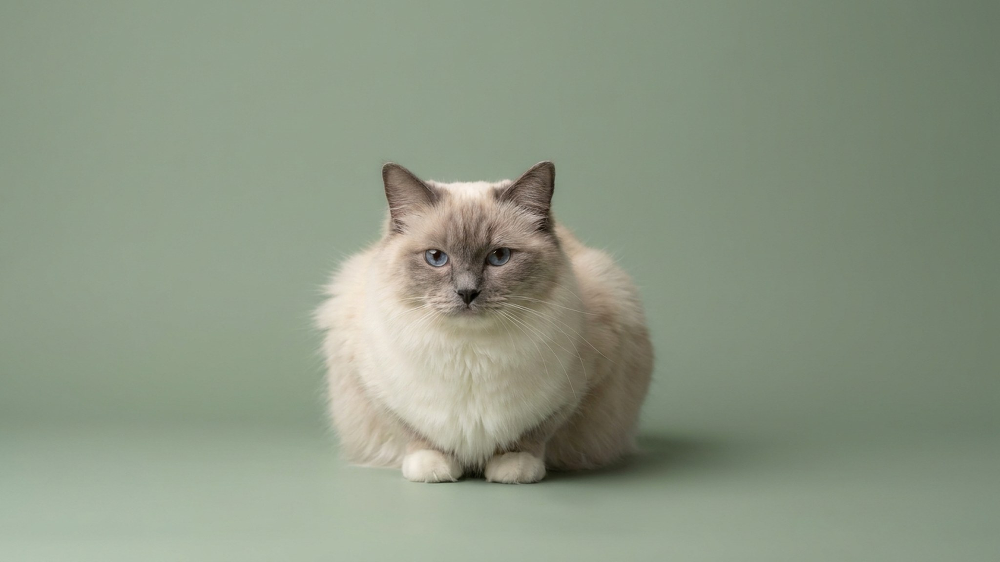

Берёшь рэгдолла на руки — и кошка буквально растекается: мышцы расслабляются, голова падает на сгиб локтя, лапы висят. Это не равнодушие и не отсутствие инстинктов самосохранения — это фирменная черта породы, закреплённая селекцией. За ней стоит особая привязанность к человеку и темперамент, который сильно влияет на быт. Разбираем, что это значит на практике.
Название породы переводится буквально: ragdoll — тряпичная кукла. Заводчики в 1960-х годах в США целенаправленно отбирали котят с пониженным мышечным тонусом при подъёме. Результат — кошка, у которой при взятии на руки срабатывает выраженная реакция расслабления. Это не патология, не утрата болевой чувствительности (распространённый миф) и не признак нездоровья. Рэгдолл прекрасно чувствует боль и умеет за себя постоять — просто не торопится.
Важно: если кот обмякает так, что не реагирует на прикосновения вовсе, — это повод показать его ветеринару. Норма породы — расслабленность, а не полная безучастность.
Рэгдолл часто описывают как «собачью» породу — и заслуженно. Несколько черт, которые отличают его от большинства кошек:
Это делает породу хорошим вариантом для семей с детьми и для людей, которым важен тактильный контакт с питомцем.
🐾 Дневник здоровья питомца — в кармане
Вес, прививки, симптомы и напоминания в одном приложении. AnimaLife следит за здоровьем питомца вместо вас.
Рэгдолл не чувствует боли — этот миф появился потому, что кошка не вырывается и не царапается при неудобном захвате. На деле она чувствует всё так же, как любая другая кошка: просто у неё высокий порог стрессовой реакции и склонность к подчинению контакту, а не уходу от него. Обращайтесь с рэгдоллом бережно — это работает в обе стороны.
Рэгдолл не требует внимания — тоже неверно. Порода с выраженной привязанностью к человеку плохо переносит долгое одиночество. Если хозяин часто и надолго отсутствует, рэгдолл может становиться тревожным: теряет аппетит, меньше играет, ищет контакт даже с незнакомыми людьми. Для таких условий стоит рассматривать заведение пары.
Порода крупная — самцы вырастают до 7–9 кг — и полностью созревает к 3–4 годам. Несколько практических ориентиров для быта:
Материал носит информационный характер и не заменяет очную консультацию ветеринара.
🐾 Не уверены, что это опасно?
Опишите симптом в AnimaLife — AI-ветеринар за минуту подскажет, что в пределах нормы, а когда пора к врачу.
🐾 Понравился разбор?
Подпишитесь на канал — каждый день разбираем по одному тревожному симптому у кошек и собак: что в пределах нормы, а когда пора к врачу. Подпишитесь, чтобы не пропустить разбор, который может спасти здоровье вашего питомца.